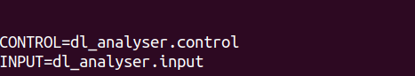

Analysing Results¶
This example shows how to use DL_ANALYSER to carry out post-analysis on the HISTORY file (or collection of the files). We intend to identify the type of hydrogen bond in the system by using the DANAI notation.
Step 1: DL_ANALYSER input file
Edit or create a DL_ANALYSER input file (e.g. dl_analyser.input), and insert all the pathnames for the HISTORY files for analysis. Make sure the pathnames to the HISTORY files are in the correct sequence.

In the above example, the file dl_analyser.input (found in the DL_ANALYSER directory workspace) was modified, and the HISTORY output files (from the DL_POLY MD runs) were already copied to the workspace/ETHANOIC_ACID_ANALYSIS/ directory.¶
Warning
Do not mix HISTORY files from different simulation models!
- TIP
DL_ANALYSER can read the trajectory files in several formats: DL_POLY trajectory format (i.e. HISTORY), PDB, xyz and a mixture of all three, both in their respective native or compressed (gzip) formats, provided they were generated from the same simulation model.
Step 2: Edit the **DL_ANALYSER* control file (e.g. dl_analyser.control)*:
First of all, define a system to be analysed. This is located in the Atom Range Definition section. The number 5392 is the total number of atoms in the system.
The word ‘auto’ means DL_ANALYSER will determine the periodic boundary conditions based on the cell vectors from the trajectory files.
The Interaction Analysis Section is where the H-bond analysis is specified.
The test1.out is the formattable results output file.
+…
…
…
--- Atom Range Definition and overall conditions for analysis as below.
1 5392 * Range of atom index (Group A). This must always define.
none * Range of atom index (Group B), if applicable. Or put 'none'.
1 * Analysis type: 1=atom-based 2 = molecule-base
acid 8 * Molecule-base analysis: name and no of atoms per molecule in Group A (MOLECULE A1)
none * Molecule-base analysis: name and no of atoms per molecule in Group A (MOLECULE A2, or 'none')
none * Molecule-base analysis: name and no of atoms per molecule in Group B (MOLECULE B1, or 'none')
none * For molecule-base analysis: name and no of atoms per molecule in Group B (MOLECULE B2, or 'none')
all * Range of MD time (ps) samples: t1 t2 (put 'all' if all samples to be included).
0 * Assign all atoms with unit mass = 1.0 (1=yes, 0=no)
auto * Periodic boundary? 0=no, other number = type of box (DLPOLY), auto = obtain from HISTORY
28.320 0.000 0.0000 * Cell vector a (x, y, z)
0.000 21.95200 0.00000 * Cell vector b (x, y, z)
-2.0765488206 0.000 36.4008179166 * Cell vector c (x, y, z)
0 * Exclude any atoms for analysis? 0=no, any number = Number of EXCLUDE statements shown below.
…
…
…
--- Interaction analysis (DANAI)
1 * Activate analysis (1=yes, 0=no)
test1.out * Output file
0 * Number of every configuration to skip
1 * Consider intra-interaction (A-A, B-B)
0 * Consider inter-interaction (A-B)
2.5 120.0 * H-bond definition: distance, angle (donor-H---acceptor)
4.5 * Hydrophobic contact distance (between alkyl carbons)
4.5 15.0 * pi-pi aromatic stacking: distance between ring, Acute angle (max.) between ring planes
0 * Cross-correlation between TWO different interactions (only works if 2 interactions are selected)
0 * alkyl-alkyl interactions (HP_1_1)
0 * aromatic-aromatic (benzene rings) interactions (HP_6_6)
0 * alcohol-alcohol (OH-OH) interactions (HB_15_15)
0 * alcohol-carboxylic interactions (HB_15_20)
0 * alcohol-aniline interactions (HB_15_46)
1 * carboxylic-carboxylic interactions (HB_20_20)
0 * carboxylic-aniline interactions (HB_20_46)
0 * water-water (HB_800_800)
…
…
…
Step 3: Edit dl_a_path file

Create the file dl_a_path in the workspace directory. Make sure the paths for the control and input files are correct.
Step 4: Run DL_ANALYSER
Within the workspace directory run dl_analyser
$ ./dl_analyserUpon successful execution, the dl_analyser.output file will be produced, highlighting the general analysis status and reading process. In addition, results output files will also be produced, depending on the dl_analyser.control file, in this example the results data file is test1.out. Below you can see the output to screen while the program is running:

Note
In the above output of DL_ANALYSER the time taken to set up neighbour lists is 0.684 s. It will take much longer if your system is large, although this is only a one-off process.
Step 5: Analysis results output
These results are given in a raw data format that needs to be extracted for further processing such as plotting a graph.
The figure above shows the beginning (LHS) and end (RHS) of the data results file (in this example it’s test1.out).¶
The output file shows three different parts to the results:
Detection of various hydrogen-bond (HB) interactions modes between carboxylic groups with respect to MD time.
Average number of interactions for each mode.
Correlation coefficients among the interaction modes.